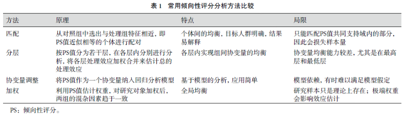
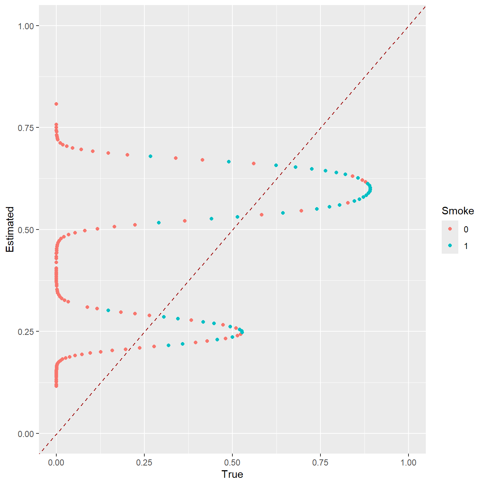
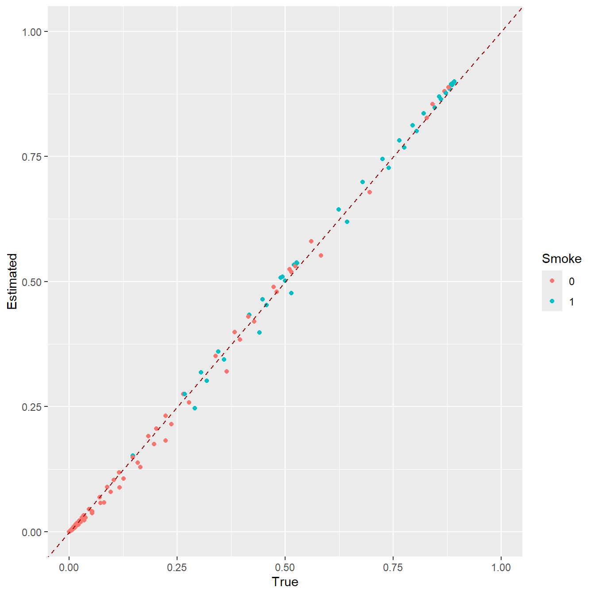
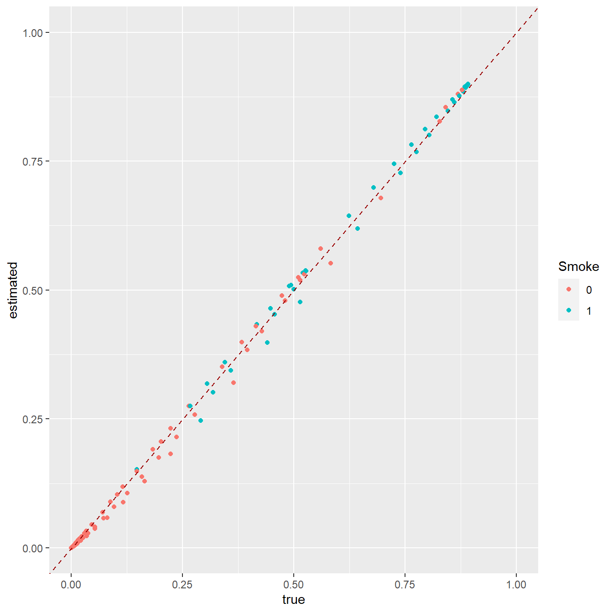
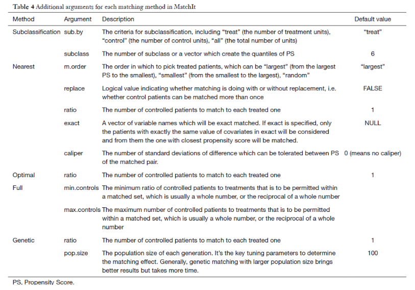
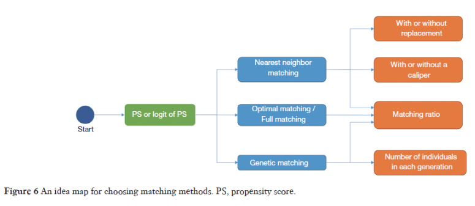
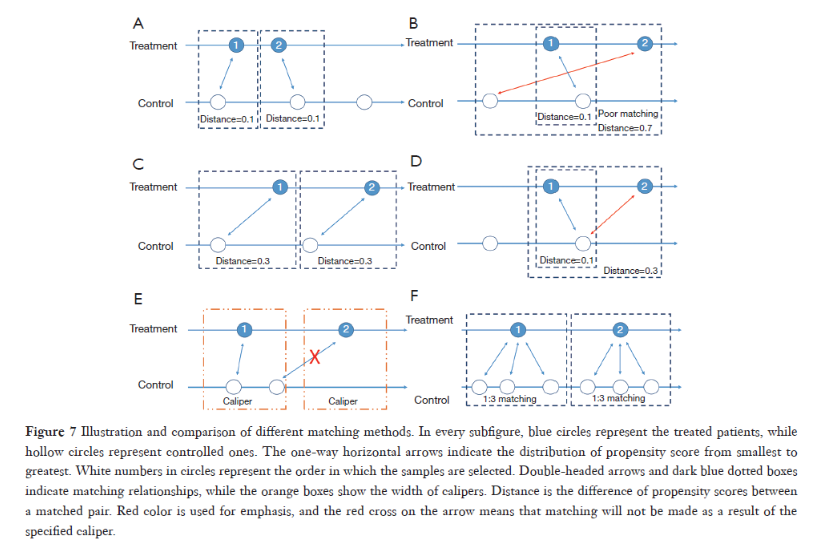
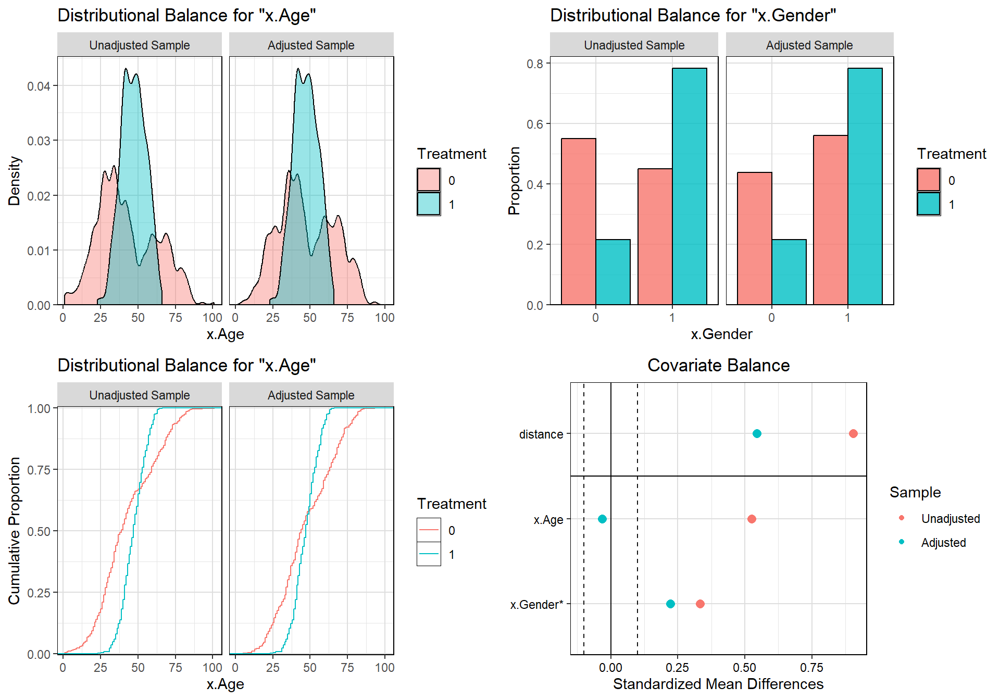

35 R语言倾向性评分：匹配
倾向性评分（Propensity Score, PS）是一种控制混杂因素的统计学方法，通过倾向性评分的方法，可以把基线控制在可比的水平，这样就可以比较处理因素带来的差异了。
比如，现在要比较A,B两种方法治疗肥胖的效果，随机分两组，分别使用A,B两种方法半年，看哪个方法效果好。一般收集到的病人性别、年龄、身高、体重、家族史、生活习惯、收入水平、生活地区等都是不一样的，这些混杂因素不控制，你很难说清楚到底是两种方法的效果还是混杂因素导致的。
利用倾向性评分就可以控制这些混杂，但是控制混杂因素的方法非常多，不要拘泥于此。对于类似上面这种情况，你还可以用协方差分析、多因素分析（统计学中的3大回归！线性回归、逻辑回归、Cox回归）、分层分析等，也可以起到控制混杂因素的效果，这些在之前的推文中全都有涉及，大家可以自行查看。
倾向性评分最大的优势是将多个混杂因素的影响用一个综合的值来表示，即倾向性评分值（Propensity Score, PS），从而降低协变量的维度，因此该方法尤其适用于协变量较多的情况。
倾向性评分的一般步骤为： 1. 估计 PS 值； 2. 利用 PS 值均衡协变量分布； 3. 均衡性检验及模型评价； 4. 处理效应估计。
其中，PS 值的估计是以处理因素作为因变量，其他混杂因素作为自变量，通过建立一个模型（可以是传统的回归模型，也可以是机器学习方法）来估计每个研究对象接受处理因素的可能性。
目前用于估计 PS 值的方法有 logistic 回归，Probit 回归、神经网络、支持向量机、分类与回归数、Boosting 算法、SuperLearner 等。其中 logistic 回归是目前最常用的方法。
到底用什么方法，并没有标准，有些人喜欢复杂的机器学习方法，有的则喜欢传统的逻辑回归，并没有优劣之分，选择合适的就好。有的人觉得机器学习方法不好解释，比如神经网络，但是也有人认为计算PS只是一个小小的步骤，更多的精力应该放在计算出来的PS是否能完美的平衡数据上，PS的计算方法不好解释就不解释了，反正不是主要问题。
倾向性评分只是一个分数（P值），自己并没有均衡协变量（混杂因素）的能力，利用 PS 值均衡组间协变量分布的方法有匹配（matching）、分层（stratification）、协变量调整（covariate adjustment）和加权（weighting）等。4种方法均有各自的特点和局限，参考下图：

其中协变量调整又可以称为倾向性评分回归、倾向性评分矫正等。
用于倾向性评分的数据要进行一些预处理，比如缺失值处理，这在倾向性评分中是很重要的一部分内容！但是这里并没有过多演示这部分内容，因为缺失值处理是通用技能！处理缺失值的方法很多，也是没有统一的标准，选择合适的即可。比如直接删除，用常数值代替，用均值/中位数等代替，算法插补（KNN、随机森林等），没有统一的标准。缺失值处理的一些方法，也可以参考这篇推文：我常用的缺失值插补方法
35.1 准备数据
下面的数据及演示的方法主要参考了这篇文章：10.21037/atm-20-3998。大家感兴趣的可以去阅读原文。
我们虚构一个数据，用于演示研究吸烟对心血管疾病的影响，性别和年龄作为混杂因素。
- CVD：结果变量，1是有心血管疾病，0是没有
- x.Age：年龄
- x.Gender：0是女，1是男
- Smoke：1吸烟，0不吸烟，是我们的处理因素
set.seed(2020)
x.Gender <- rep(0:1, c(400,600)) # 400女 600男
x.Age <- round(abs(rnorm(1000, mean=45, sd=15)))
# 对于这个数据来说，实际PS（tps）是可以计算出来的，如果这里不理解，也问题不大！
z <- (x.Age - 45) / 15 - (x.Age-45) ^ 2 / 100 + 2 * x.Gender
tps <- exp(z) / (1+exp(z))
Smoke <- as.numeric(runif(1000) < tps)
z.y <- x.Gender + 0.3*x.Age + 5*Smoke - 20
y <- exp(z.y) / (1+exp(z.y))
CVD <- as.numeric(runif(1000) < y)
x.Age.mask <- rbinom(1000, 1, 0.2) # 随机产生几个缺失值
x.Age <- ifelse(x.Age.mask==1, NA, x.Age)
# 原始数据长这样：
data <- data.frame(x.Age, x.Gender, Smoke, CVD)
head(data)
## x.Age x.Gender Smoke CVD
## 1 51 0 1 0
## 2 50 0 0 0
## 3 29 0 0 0
## 4 28 0 0 0
## 5 3 0 0 0
## 6 56 0 1 1首先可以看一下原始数据的基线资料表，用的是tableone这个包，之前也做过介绍，做基线资料表的R包还有非常多，比如：
- 使用compareGroups包1行代码生成基线资料表
- 使用R语言快速绘制三线表
- tableone？table1？傻傻分不清楚
- 超强的gtSummary ≈ gt + comparegroups ??
为什么用tableone呢？因为它能计算SMD（后面会介绍这个SMD的作用），而且其他教程都是用的它…
library(tableone)
table2 <- CreateTableOne(vars = c('x.Age', 'x.Gender', 'CVD'),
data = data,
factorVars = c('x.Gender', 'CVD'),
strata = 'Smoke',
smd=TRUE)
table2 <- print(table2,smd=TRUE,
showAllLevels = TRUE,
noSpaces = TRUE,
printToggle = FALSE)
table2
## Stratified by Smoke
## level 0 1 p test SMD
## n "" "549" "451" "" "" ""
## x.Age (mean (SD)) "" "42.76 (19.69)" "47.04 (8.14)" "<0.001" "" "0.284"
## x.Gender (%) "0" "299 (54.5)" "101 (22.4)" "<0.001" "" "0.698"
## "1" "250 (45.5)" "350 (77.6)" "" "" ""
## CVD (%) "0" "452 (82.3)" "230 (51.0)" "<0.001" "" "0.705"
## "1" "97 (17.7)" "221 (49.0)" "" "" ""
#write.csv(table2, file = "Table2_before_matching.csv")结果中可以看出x.Age和x.Gender两个变量在两组间是有差异的，其中SMD(standardized mean differences)可以用来衡量协变量在不同组间的差异；除此之外，这两个变量的P值在不同性别间也是小于0.001的，说明不同性别间这两个变量是有明显差别的。
如果此时直接探讨是否吸烟对CVD的影响，很有可能会得到错误的答案，经典的辛普森悖论就是由于混杂因素的存在才导致出现神奇的结果（比如有种药对男人有效，对女人也有效，但是对全人类就没效了！）。
所以要想办法解决x.Age和x.Gender两个变量在两组间的差异，达到基线可比的目的。今天要介绍的方法就是倾向性评分匹配。
35.2 matchIt包进行PSM
matchIt包支持非常多计算PS的方法，比如自带的logistic回归、广义可加模型、分类和回归树、神经网络，除了自带的方法，也支持其他方法计算的PS。这些方法通过distance参数指定：
distance:指定PS的计算方法，默认是logit，即logistic回归，GAMlogit（广义可加模型），rpart（决策树）,nnet(神经网络)，除此之外，也可以是使用其他包或方法计算的PS值！distance.options:当你选择好了方法之后，不同的方法会有不同的额外选项。
下面演示使用logistic回归的方法计算PS，这里我们的处理因素是二分类变量(是否吸烟)，可以通过逻辑回归计算这些协变量（也就是混杂因素）的P值，这个P值就是倾向性评分。倾向性评分就是P值！（有网友指出这样说不对，应该是参数pi表示事件的概率）
library(MatchIt)
# 这里为了方便演示直接删掉了缺失值
data.complete <- na.omit(data)
# 因变量是处理因素，自变量是需要平衡的协变量
m.out <- matchit(Smoke~x.Age+x.Gender,
data = data.complete,
distance = "logit" # 选择logistic回归
)
m.out
## A matchit object
## - method: 1:1 nearest neighbor matching without replacement
## - distance: Propensity score
## - estimated with logistic regression
## - number of obs.: 831 (original), 738 (matched)
## - target estimand: ATT
## - covariates: x.Age, x.Gender上面是一个简单的结果，告诉你匹配方法是1:1无放回最近邻匹配，计算方法是logistic回归，匹配了738例等信息。
可通过以下方法获得算法估计的PS值：
eps <- m.out$distance
length(eps)
## [1] 831
head(eps)
## 1 2 3 4 5 6
## 0.2583040 0.2545807 0.1847661 0.1818430 0.1200378 0.2774451一开始我们已经计算出了实际PS值（tps），所以我们可以画一个tps和估计ps的散点图，以tps为横坐标，以eps为纵坐标：
library(ggplot2)
# 去掉缺失值
tps.comp <- tps[complete.cases(data)]
Smoke.comp <- as.factor(Smoke[complete.cases(data)])
df <- data.frame(True=tps.comp, Estimated=eps, Smoke=Smoke.comp)
ggplot(df, aes(x=True, y=Estimated, colour=Smoke)) +
geom_point() +
geom_abline(intercept=0,slope=1, colour="#990000", linetype="dashed") +
expand_limits(x=c(0,1),y=c(0,1))
可以看到拟合结果非常烂！因为一开始计算tps时用了平方（二次项），但是使用logistic估计ps时并没有用平方。
我们把公式也变成平方即可，此时再画一个拟合图就完美一致了！如下所示：
# 对x.Age平方
m.out <- matchit(Smoke~I(x.Age^2)+x.Age +x.Gender,
data=data.complete)
eps <- m.out$distance
tps.comp <- tps[complete.cases(data)]
Smoke.comp <- as.factor(Smoke[complete.cases(data)])
df <- data.frame(True=tps.comp, Estimated=eps, Smoke=Smoke.comp)
ggplot(df, aes(x=True, y=Estimated, colour=Smoke)) +
geom_point() +
geom_abline(intercept=0,slope=1, colour="#990000", linetype="dashed") +
expand_limits(x=c(0,1),y=c(0,1))
此时的PS是通过logistic回归计算的，既然PS就是P值，当然你完全可以用glm自己计算，通过以下方法：
tmp <- glm(Smoke~I(x.Age^2)+x.Age +x.Gender, data=data.complete,
family = binomial())
tmp.df <- data.frame(estimated = tmp$fitted.values,
true = tps.comp,
Smoke=Smoke.comp)
ggplot(tmp.df, aes(true, estimated))+
geom_point(aes(color=Smoke))+
geom_abline(intercept=0,slope=1, colour="#990000", linetype="dashed") +
expand_limits(x=c(0,1),y=c(0,1))
看这个结果和matchit得到的结果完全一样！
改变matchit()的参数即可使用不同的算法估计PS，比如下面是分类和回归树及神经网络方法：
# cart
m.out <- matchit(Smoke~x.Age+x.Gender,
data=data.complete,
distance='rpart')
# nnet
m.out <- matchit(Smoke~x.Age+x.Gender,
data=data.complete,
distance='nnet',
distance.options=list(size=16))默认的只有4种方法，但是完全可以自己通过其他方法计算PS，然后提供给distance参数即可！非常强大！
35.2.1 使用随机森林计算PS
默认没提供随机森林的算法，我们可以通过其他R包计算，反正PS就是P值，只要拿到P值就可以了！
# 使用随机森林构建模型
library(randomForest)
## randomForest 4.7-1.1
## Type rfNews() to see new features/changes/bug fixes.
##
## Attaching package: 'randomForest'
## The following object is masked from 'package:ggplot2':
##
## margin
data.complete$Smoke <- factor(data.complete$Smoke)
rf.out <- randomForest(Smoke~x.Age+x.Gender, data=data.complete)
rf.out
##
## Call:
## randomForest(formula = Smoke ~ x.Age + x.Gender, data = data.complete)
## Type of random forest: classification
## Number of trees: 500
## No. of variables tried at each split: 1
##
## OOB estimate of error rate: 22.5%
## Confusion matrix:
## 0 1 class.error
## 0 360 102 0.2207792
## 1 85 284 0.2303523从随机森林结果中提取预测类别为1（有CVD）的概率：
eps <- rf.out$votes[,2] # Estimated PS接下来只要把这个eps提供给distance参数即可：
matchit(formula=Smoke~x.Age+x.Gender,
data=data.complete,
distance=eps, # 自己估计的eps
method='nearest',
replace=TRUE,
discard='both',
ratio=2)
## A matchit object
## - method: 2:1 nearest neighbor matching with replacement
## - distance: User-defined [common support]
## - common support: units from both groups dropped
## - number of obs.: 831 (original), 520 (matched)
## - target estimand: ATT
## - covariates: x.Age, x.Gender其他方法也是同理，只需要提供P值即可，但并不是越复杂的方法效果越好哦！不信的话可以把几种方法得到的eps都画一个散点拟合图看看效果，这个数据是逻辑回归最好哈！
35.3 主要匹配方法选择
在确定了使用哪种算法计算PS后，匹配方法也是需要注意的一个问题，需要注意以下几个方面，首先是匹配方法的选择（method），然后是采样手段（有无放回），相似度的度量（卡钳值或其他），匹配比例（1:1或1：多）。
method:- 默认的匹配方法是最近邻匹配nearest，其他方法还有
- “exact” (exact matching),
- “full” (optimal full matching),
- “optimal” (optimal pair matching),
- “cardinality”(cardinality and template matching),
- “subclass” (subclassification),
- “genetic” (genetic matching),
- “cem” (coarsened exact matching)
每个匹配方法都提供了详细的解释，大家感兴趣的自己查看即可。
caliper:卡钳值，也就是配对标准，两组的概率值（PS）差距在这个标准内才会配对。这里的卡钳值是PS标准差的倍数，默认是不设置卡钳值。还有一个std.caliper参数，默认是TRUE，如果设置FALSE，你设置的卡钳值就直接是PS的倍数。replace:能否重复匹配，默认是FALSE，意思是假如干预组的1号匹配到了对照组的A，那A就不能再和其他的干预组进行匹配了。ratio:设置匹配比例，干预组:对照组到底是1比几，默认为1:1。ratio=2即是干预组：对照组是1:2。所以一般要求数据的对照组数量多于干预组才行。如果对照组比干预组多出很多，完全可以设置1:n进行匹配，这样还能损失更少的样本信息，但是一般也不会超过1:4。reestimate:如果是TRUE，丢掉没匹配上的样本，PS会使用剩下的样本重新计算PS，如果是FALSE或者不写就不会重新计算PS。



比如下面是一个有放回的，1:2的，最近邻匹配：
m.out <- matchit(Smoke~x.Age+x.Gender,
data=data.complete,
distance='logit',
method='nearest',
replace=TRUE,
ratio=2)可以通过m.out$match.matrix获取配好的对子：
head(m.out$match.matrix)
## [,1] [,2]
## 1 "204" "23"
## 6 "283" "163"
## 10 "56" "30"
## 12 "41" "28"
## 20 "79" "38"
## 26 "84" "70"第一列是干预组的序号，第二列是和干预组配好对的，对照组的序号。
m.out$discarded查看某个样本是否被丢弃：
table(m.out$discarded)
##
## FALSE
## 83135.4 匹配后数据的平衡性检验
检查匹配后的数据，主要是看协变量在不同组间是否已经均衡了（是不是没有差异了）。
关于这个倾向性评分匹配后数据的平衡性检验，文献中比较推荐使用SMD和VR(variance ratio)，SMD<0.25说明均衡了，VR>2.0或者VR<0.5说明很不均衡（越接近1越均衡）！
但其实也可以用假设检验，比如t检验、卡方检验等，也是没有统一的标准！
做一个1:1无放回的最近邻匹配：
m.out <- matchit(Smoke~x.Age+x.Gender,
data=data.complete,
distance='logit',
method='nearest',
replace=FALSE,
ratio = 1)通过summary()查看匹配前后，不同组间协变量的各种统计量。通常建议选择standardize = TRUE查看标准后的各协变量的平衡性指标：
summary(m.out,standardize = TRUE)
##
## Call:
## matchit(formula = Smoke ~ x.Age + x.Gender, data = data.complete,
## method = "nearest", distance = "logit", replace = FALSE,
## ratio = 1)
##
## Summary of Balance for All Data:
## Means Treated Means Control Std. Mean Diff. Var. Ratio eCDF Mean
## distance 0.5170 0.3858 0.9050 0.6205 0.2069
## x.Age 47.0352 42.7619 0.5247 0.1711 0.1306
## x.Gender 0.7832 0.4502 0.8081 . 0.3330
## eCDF Max
## distance 0.4833
## x.Age 0.3629
## x.Gender 0.3330
##
## Summary of Balance for Matched Data:
## Means Treated Means Control Std. Mean Diff. Var. Ratio eCDF Mean
## distance 0.5170 0.4380 0.5448 0.7605 0.1298
## x.Age 47.0352 47.3035 -0.0329 0.1908 0.1072
## x.Gender 0.7832 0.5610 0.5393 . 0.2222
## eCDF Max Std. Pair Dist.
## distance 0.4255 0.7108
## x.Age 0.2439 2.2436
## x.Gender 0.2222 0.5393
##
## Sample Sizes:
## Control Treated
## All 462 369
## Matched 369 369
## Unmatched 93 0
## Discarded 0 0结果主要是3个部分：
Summary of Balance for All Data：原始数据中干预组和对照组的平均PS值和平均协变量，SMD,VR，每个协变量和PS的CDF（cumulative distribution functions）的均值和最大值Summary of Balance for Matched Data：匹配后数据的指标Sample Sizes：样本数量
通过观察比较匹配前后的数据指标可知，x.Age均衡了（0.0329<0.1），但是x.Gender并没有均衡(0.5393>0.1)！
这个默认的函数在计算SMD的时候会把分类变量按照连续性变量进行计算，所以计算结果是有一些问题的。在一开始计算匹配前数据的SMD时我们用的是tableone这个包，匹配后数据的SMD理论上也是可以用这个包的：
# 首先提取匹配后的数据
mdata <- match.data(m.out)
library(tableone)
table5 <- CreateTableOne(vars = c('x.Age', 'x.Gender', 'CVD'),
data = mdata,
factorVars = c('x.Gender', 'CVD'),
strata = 'Smoke',
smd=TRUE)
table5 <- print(table5, smd=TRUE, showAllLevels = TRUE,
noSpaces = TRUE, printToggle = FALSE)
table5
## Stratified by Smoke
## level 0 1 p test SMD
## n "" "369" "369" "" "" ""
## x.Age (mean (SD)) "" "47.30 (18.65)" "47.04 (8.14)" "0.800" "" "0.019"
## x.Gender (%) "0" "162 (43.9)" "80 (21.7)" "<0.001" "" "0.487"
## "1" "207 (56.1)" "289 (78.3)" "" "" ""
## CVD (%) "0" "287 (77.8)" "190 (51.5)" "<0.001" "" "0.572"
## "1" "82 (22.2)" "179 (48.5)" "" "" ""这个tableone计算的x.Gender的SMD是0.487，也是表明这个变量并没有被均衡。
但是tableone这个包计算的SMD也是有一些问题的，具体原因大家自己读文献吧：Zhang Z, Kim HJ, Lonjon G, et al. Balance diagnostics after propensity score matching. Ann Transl Med 2019;7:16.
所以推荐大家使用cobalt包进行平衡性指标的计算。
35.4.1 cobalt包
使用cobalt包进行平衡性指标的计算，这个包很专业，专门处理这类匹配问题的，大家可以去它的官网学习更多的细节！
library(cobalt)
## cobalt (Version 4.4.1, Build Date: 2022-11-03)
##
## Attaching package: 'cobalt'
## The following object is masked from 'package:MatchIt':
##
## lalonde
# m.threshold表示SMD的阈值，小于这个阈值的协变量是平衡的
bal.tab(m.out, m.threshold = 0.1, un = TRUE)
## Balance Measures
## Type Diff.Un Diff.Adj M.Threshold
## distance Distance 0.9050 0.5448
## x.Age Contin. 0.5247 -0.0329 Balanced, <0.1
## x.Gender Binary 0.3330 0.2222 Not Balanced, >0.1
##
## Balance tally for mean differences
## count
## Balanced, <0.1 1
## Not Balanced, >0.1 1
##
## Variable with the greatest mean difference
## Variable Diff.Adj M.Threshold
## x.Gender 0.2222 Not Balanced, >0.1
##
## Sample sizes
## Control Treated
## All 462 369
## Matched 369 369
## Unmatched 93 0x.Age的SMD和默认是一样的，但是x.Gender是0.2222，比默认的小多了！
这个结果比默认的结果更可靠，具体原因大家自己去读上面那篇文献。
计算VR，结果中并没有计算x.Gender的VR，而且根据VR来看，x.Age也没有均衡。
bal.tab(m.out, v.threshold = 2)
## Balance Measures
## Type Diff.Adj V.Ratio.Adj V.Threshold
## distance Distance 0.5448 0.7605 Balanced, <2
## x.Age Contin. -0.0329 0.1908 Not Balanced, >2
## x.Gender Binary 0.2222 .
##
## Balance tally for variance ratios
## count
## Balanced, <2 1
## Not Balanced, >2 1
##
## Variable with the greatest variance ratio
## Variable V.Ratio.Adj V.Threshold
## x.Age 0.1908 Not Balanced, >2
##
## Sample sizes
## Control Treated
## All 462 369
## Matched 369 369
## Unmatched 93 035.4.2 统计检验衡量均衡性
除了SMD和VR之外，传统的统计检验也可以用于检查匹配后的数据有没有均衡！
首先取出匹配好的数据：
mdata <- match.data(m.out)
head(mdata)
## x.Age x.Gender Smoke CVD distance weights subclass
## 1 51 0 1 0 0.2583040 1 1
## 2 50 0 0 0 0.2545807 1 2
## 6 56 0 1 1 0.2774451 1 229
## 9 71 0 0 1 0.3397803 1 142
## 10 47 0 1 1 0.2436248 1 345
## 12 59 0 1 1 0.2893402 1 2其中distance是估计的PS，weights是权重，因为我们用的是1:1无放回匹配，所以全都是1。
下面用t检验看看匹配后干预组和对照组的x.Age有没有差异：
t.test(x.Age ~ Smoke, data = mdata)
##
## Welch Two Sample t-test
##
## data: x.Age by Smoke
## t = 0.25327, df = 503.47, p-value = 0.8002
## alternative hypothesis: true difference in means between group 0 and group 1 is not equal to 0
## 95 percent confidence interval:
## -1.812969 2.349555
## sample estimates:
## mean in group 0 mean in group 1
## 47.30352 47.03523结果也是显示x.Age已经没有差异了！
然后用卡方检验看看x.Gender是否还有差异：
chisq.test(mdata$x.Gender, mdata$Smoke,correct = F)
##
## Pearson's Chi-squared test
##
## data: mdata$x.Gender and mdata$Smoke
## X-squared = 41.342, df = 1, p-value = 1.278e-10结果显示x.Gender还是有差异的，这个结果也和SMD的判断结果相同。
35.5 结果可视化
默认提供3种图形，但是美观性太差，就不放图了，大家感兴趣的可以自己试试看。
plot(m.out) # 默认QQ图
plot(m.out, type = 'jitter') # 散点图
plot(m.out, type = 'hist') # 直方图默认的不好看，还是用cobalt包进行结果的可视化。
cowplot::plot_grid(
bal.plot(m.out, var.name = 'x.Age', which = 'both', grid=TRUE),
bal.plot(m.out, var.name = 'x.Gender', which = 'both', grid=TRUE),
bal.plot(m.out, var.name = 'x.Age', which = 'both', grid=TRUE, type="ecdf"),
# 还有很多参数可调整
love.plot(bal.tab(m.out, m.threshold=0.1),
stat = "mean.diffs",
grid=TRUE,
stars="raw",
abs = F)
)
上面两幅图展示的是协变量在匹配前（unadjusted sample）和匹配后（adjusted sample）的数据中的分布情况，连续型变量默认是画密度图，分类变量默认是画柱状图。
左下图是累计密度图。右下的love plot图可视化匹配前后协变量的SMD，两条竖线是0.1阈值线，匹配后x.Age在两条竖线之间，说明平衡，x.Gender不在两条竖线之间，说明还是没平衡。
35.6 不平衡怎么办？
比如这里的x.Gender这个变量就是不平衡的。
有非常多的方法可以尝试，这里提供5种方法，但是非常有可能你各种方法都试过了还是不平衡！
首先可以换一种计算PS的方法，可以换算法，换公式（增加二次项、交互项等）。
# 增加二次项，结果依然不平衡
m.out <- matchit(Smoke~I(x.Age^2)+x.Age+x.Gender,
data=data.complete,
distance='logit',
method='nearest',
replace=FALSE,
ratio=1)第二可以换匹配方法及对应的参数。
# 还是不平衡
m.out <- matchit(Smoke~I(x.Age^2)+x.Age+x.Gender,
data=data.complete,
distance='logit',
method='genetic',
pop.size=100)
bal.tab(m.out, m.threshold=0.1)第三，可以使用精确匹配，性别不平衡，那就在匹配时要求按照性别精确匹配，可以使用参数exact=c('x.Gender')。
但是这样做的代价是大部分样本都浪费了！只有一小部分才能匹配上！
m.out <- matchit(Smoke~I(x.Age^2)+x.Age+x.Gender,
data=data.complete,
distance='logit',
method='nearest',
exact = c('x.Gender','x.Age'), # 精准！
replace=FALSE,
ratio=1)
bal.tab(m.out, m.threshold=0.1)
## Balance Measures
## Type Diff.Adj M.Threshold
## distance Distance 0 Balanced, <0.1
## I(x.Age^2) Contin. 0 Balanced, <0.1
## x.Age Contin. 0 Balanced, <0.1
## x.Gender Binary 0 Balanced, <0.1
##
## Balance tally for mean differences
## count
## Balanced, <0.1 4
## Not Balanced, >0.1 0
##
## Variable with the greatest mean difference
## Variable Diff.Adj M.Threshold
## I(x.Age^2) 0 Balanced, <0.1
##
## Sample sizes
## Control Treated
## All 462 369
## Matched 147 147
## Unmatched 315 222第四，增加样本量（一切误差问题都可以通过增加样本量解决）。
第五，匹配后结合其他方法，比如回归、分层等。
35.7 其他问题
这篇推文关于倾向性评分匹配说的还算详细，尤其是matchIt包的使用，但大部分都是基于开头说的那篇文献。
除此之外，关于倾向性评分，还有一些很重要的问题并没有涉及到。比如：
- 样本权重不同，匹配后数据如何检查平衡性？
- 倾向性评分只能平衡记录到的协变量，对于潜在的、未被记录的误差不能平衡，怎么办？
- 处理因素多分组或者是连续型变量时如何处理？
- 倾向性评分的加权、回归、分层如何做？
这些问题待以后有时间慢慢解决！
35.8 参考资料
- https://zhuanlan.zhihu.com/p/386501046
- https://mp.weixin.qq.com/s/ITWBruRe5LhuPq8TXjxPZQ
- https://zhuanlan.zhihu.com/p/559469895
- Propensity score matching with R: conventional methods and new features